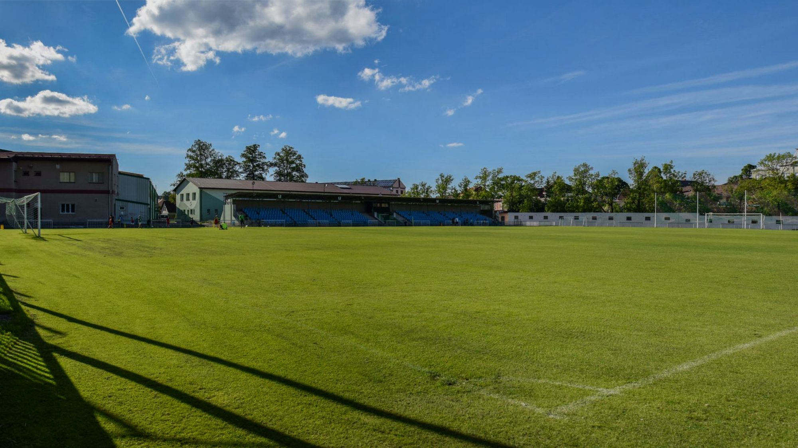
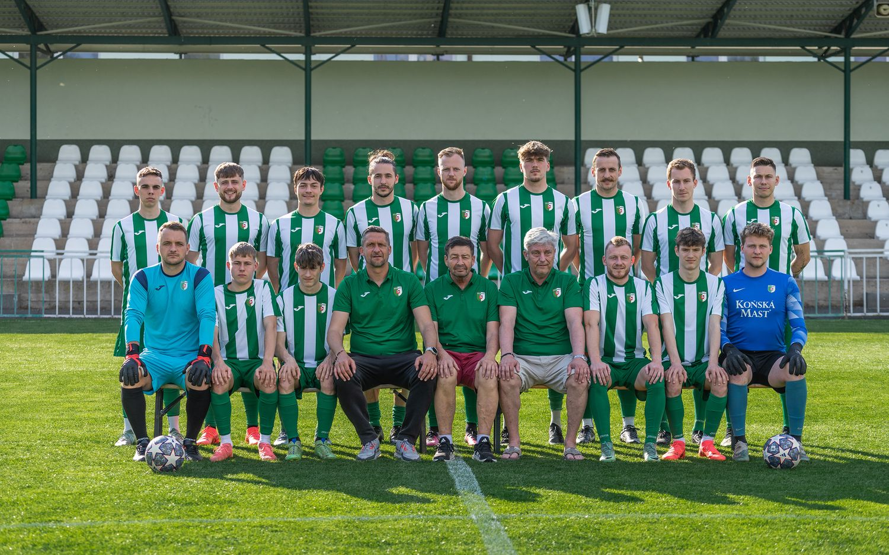
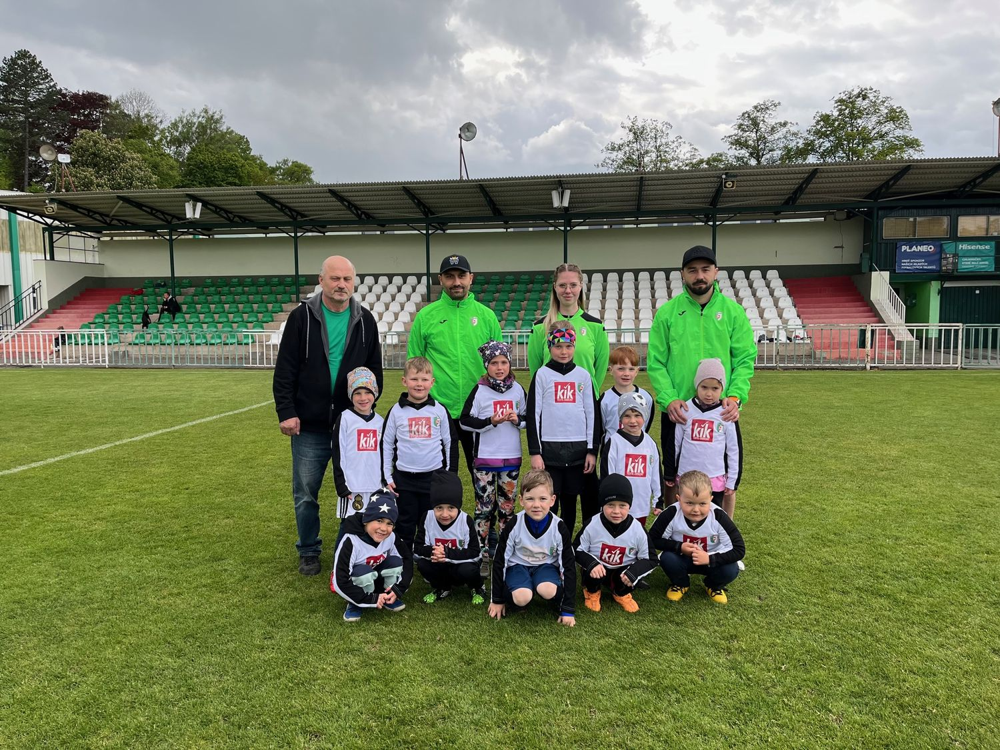
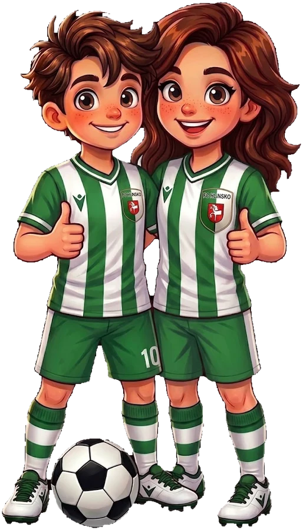

Co je nového
Zápasy, akce pro veřejnost i to, co se děje kolem klubu. Sledujte nás také na sociálních sítích.
Áčko hraje divizi
Muži A jsou vlajkovou lodí klubu. Domácí zápasy hrají na hlavní ploše areálu Olšinky, kam na ně chodí pravidelně stovky diváků.
- Soutěž
- Divize
- Skupina
- C
- Domácí hřiště
- Olšinky, hřiště č. 1
- Sezóna
- 2025/2026

Více o týmu
První trénink máš zdarma
Bereme holky i kluky od pěti let. Nepotřebujete nic než sportovní boty a chuť hýbat se. Přijďte se podívat na trénink, seznámit se s trenéry a zkusit si to nanečisto.

Odchovanci, kteří to dotáhli
Hlinsko není jen okresní fotbal. Přes naše hřiště prošli hráči, kteří se prosadili v nejvyšší soutěži i v reprezentaci. Postup do čtvrtfinále Českého poháru přes Baník Ostrava v roce 1980 a účast ve druhé národní lize v sezoně 1984/85 jsou dodnes nejcennějšími zápisy v klubové kronice.
Přijďte nám zafandit
Domácí zápasy hrajeme v areálu Olšinky. Vstup na mládežnická utkání je zdarma a program celé sezóny najdete v rozpisu.
Naši partneři
Děkujeme firmám a institucím, které dlouhodobě podporují hlinecký fotbal od přípravek až po áčko.